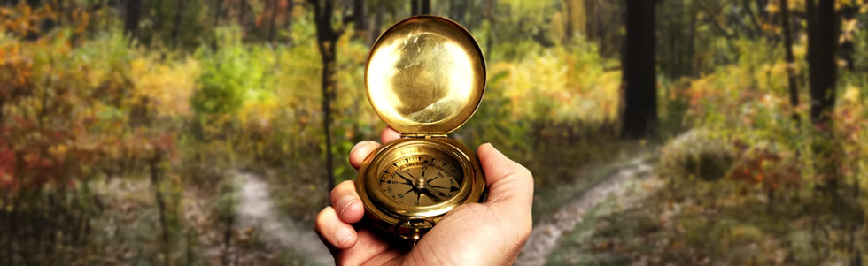
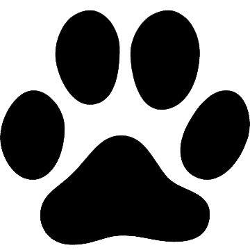

UNITATS
Estol
de 6 a 8 anys
En una època de canvis molt importants a nivell físic i mental, adquirim cada cop més una progressiva autonomia relativa als familiars i comencem a trobar el nostre lloc al món. Ens introduïm a l'escoltisme, a la natura, i reforcem el sentiment de grup i expressió personal. No fem ruta, encara ens estem adaptant a les caminades llargues!
Llops
de 9 a 11 anys
POSA AQUÍ EL TEXT DELS LLOPS
Raiers
de 12 a 14 anys
Ja tenim ben interioritzat l'escoltisme i tot el que comporta, és per això que comencem a agafar més autonomia. Els raiers ens hem de recolzar una als altres, és una època on comencem a formar-nos com a persones i ningú pot caure del rai. Per Setmana Santa i Campaments, marxem de ruta, amb possibilitat a l'estiu d'anar per qualsevol lloc de la Península.
Secció
de 15 a 17 anys
És el temps decisiu per als ideals, per a les preguntes i les ambicions. Noies i nois esdevenen els veritables protagonistes de la vida de la unitat.
Klan
+17 anys
POSA AQUÍ EL TEXT DE LA KLAN